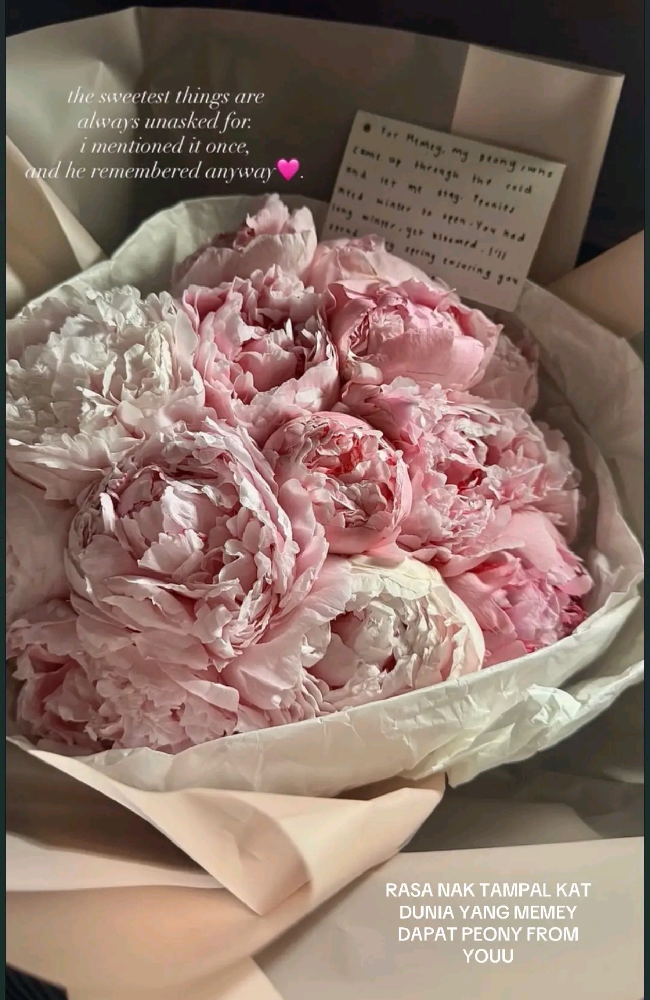
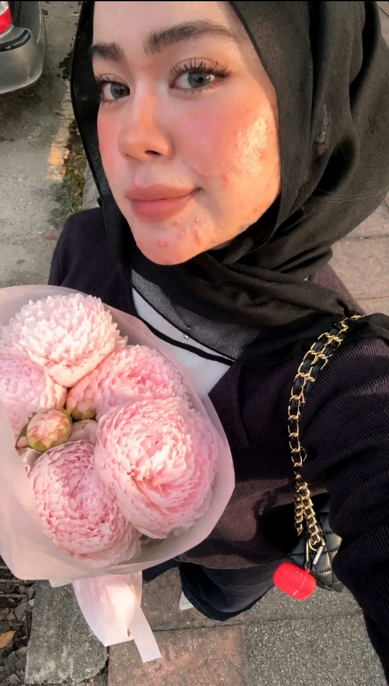

A quiet archive of every little thing that matters – her smile, her softness, the way she carries the world
For almost a year before she ever heard from me properly, I was a loud presence in her comments – the kind nobody minded, because there was warmth in it. She didn't know me as Afiq Haikal yet. I didn't know her as Damia yet.
"yes hello, this me, your loud comment, my true self."
That was how I introduced myself. She replied. And somewhere between a brother's wedding post and a teasing follow-back, two people who had been quietly noticing each other for a year finally began.
Five names for one girl, each one a different distance to her – from the world that knows her as Michelle, to the one who calls her my peony.
She reads philosophy. She writes poems. She practiced calligraphy "just to make writing more fun." There is beauty in her brain, and she made sure of it.
"who cares if im pretty but fail my studies, right?"Capital letters when she is excited. "MEMEY SUKAA SANGATT." "NAK NANGISS." Soft little voice notes when she is shy. She feels everything fully, and she means every word.
a heart that types in all-caps when it overflowsShe has a fashion sense she takes seriously – "effortless chic," she calls it. She can tell you why one outfit gives mature gentleman vibe and another doesn't. Her own style: never loud, never plain, always considered.
the kind of person who matches a leather jacket to a bag without tryingShe won't watch horror movies – but she'll listen to scary podcasts ("i love DENGAR… tengok tak…"). She is the one who wakes her sleeping friends up at sleepovers so she isn't alone. Brave enough to admit she's scared.
asks Papa to accompany her downstairs for water at nightShe'll redo her notes from scratch if they aren't neat enough. She makes coffee for her dad. She helps her mom. She prays for the people she cares about. Discipline and tenderness in the same girl.
"i will koyak koyak paper just for dapat kan notes yang cantik"She has been through more than she lets on. She has trauma she's still working through. And still – she stays gentle. Still gives. Still notices things. Still keeps her kindness.
"you kept your kindness through everything"A law student who can spend hours making her notes beautiful before she'll even study from them. Facts of the case. Judgement. Principle. Related laws. Add Math was her favourite back in school – never plain Math.
Her chat is full of soft things – kawaii cat punches, sleepy bunnies, the same shy sticker on rotation. She speaks in small creatures. Send her one and you'll get three back.
Learned it to make writing feel fun again. Her handwriting noticed before her face was.
Reads them in pieces, jots down the thoughts that catch her. Soft girl, sharp mind.
Writes her own – quiet ones, mostly for herself. The peony letter is what happens when she lets the poems out.
She used to have a gummy smile – she'll tell you that herself, almost shyly. And then there's the smile she has now, the one that arrives bila bangun and sees too many texts from me, the one that doesn't stop when I call her memey. I say it brought mine back. She says I never fail to put one on hers.
Comel. Soft. She is shy about it, half-convinced it sounds wrong. I say I love it. She still sends voice notes anyway, even while she protests.
Their shared little creature – she's Mommy, I'm Daddy, Arsy gets new outfits, casts magic on Mommy when she's sick, and gets bekuu when she's sad. Silly. Tender. Theirs.
She believes love should feel like a home that still makes your heart skip. She believes nothing beautiful is meant to stay forever in the same way. She believes in being gentle with the moment instead of grieving it before it ends. She is twenty and she thinks like this on a regular Saturday.
She had mentioned her favourite flower exactly once. She didn't ask again. She didn't think anyone would remember. I wrote it in my journal that night, looked up what a peony even looked like, and built quietly toward that Friday for weeks.


"i adored peonies long before i ever held one in my own hands."
Masa kecil dulu, I only knew them from magazines, random pictures on Google – like something too soft and too beautiful to ever really belong in my world. I never got to see them properly in front of me, just little closed buds, quiet and shy, like they were always waiting for the right moment to be seen.
Then one day, you asked me "what's your favourite flower?" and I only mentioned it once. Just once. I didn't ask again, I didn't hint, I didn't think it mattered enough to be remembered… because honestly, I didn't think anyone would remember something so small.
But you did… and then, on Friday 9 PM, you gave me a bouquet of peonies.
When I saw them, I felt like a part of me that stayed quiet for years finally got seen. Like the little version of me who only ever admired them from far away was suddenly allowed to hold them, breathe them in, and say "so this is what it feels like."
I tidur with her beside me. I wake up and they're the first thing I look at. I pass by them and still stop, again and again, like I'm scared I'll miss the fact that they're actually here with me. Even the slightly broken ones – I still love them the same. Maybe even more. Because they feel real, lived-in.
Last night I just stared at them for a long time, and I noticed how a few petals had already started to fall slowly onto the table. For a moment, it made my heart ache, because it reminded me that one day, they will wilt too. But then I smiled through it – because at least I was given this chance to have them, to see them bloom, to exist with them until even the very last petal falls.
Nothing beautiful is ever meant to stay forever in the same way, and maybe it's not about keeping them alive for as long as possible, but about how deeply they were felt while they were still here. About how something so temporary can still leave something permanent inside me.
I don't want to rush past this just because it will end one day. I don't want to stand too far ahead in time and grieve something that hasn't even finished happening yet.
So I'm trying – really trying – to stay gentle with this moment.
To not turn love into fear. To not let future loss steal present beauty.
Memey thinks that's what's making me emotional… not just the flowers, but the way you remembered. The way you paid attention to something I didn't even think was important enough to keep.
It feels like being quietly cared for. Not loudly, not dramatically – but in a way that reaches the parts of me I don't usually know how to explain.